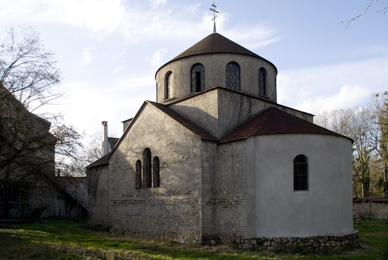

Русский православный приход
Храм
преподобного Серафима
Саровского
Наш приход, основанный в 1957 году в Монжероне, объединяет православных верующих любых национальностей в традиции Русской Православной Церкви.
Узнать больше
Место веры, истории
и общины
Наш приход преподобного Серафима Саровского, основанный в 1957 году на территории усадьбы «Мулен-де-Санли», открыт для православных верующих любых национальностей, в традиции Русской Православной Церкви.
Небесный покровитель
Житие преподобного Серафима Саровского, его наставления и храмовая икона.
02История
От приюта для русских детей 1953 года до храма, построенного архитектором А. П. Щебляковым.
03Богослужения
Всенощное бдение в субботу вечером, Божественная литургия в воскресенье утром.
04Реставрация
Помогите сохранить этот уникальный памятник православного наследия.
«Стяжи дух мирен, и тысячи вокруг тебя спасутся.»
Преподобный Серафим Саровский

Место, наполненное
историей
С 1953 года это место молитвы хранит память о русской эмиграции во Франции и о свете православной веры.
Приходите молиться
с нами
Богослужения совершаются на церковнославянском и французском языках. Мы приглашаем всех верующих, независимо от национальности и церковного опыта.
Все богослужения